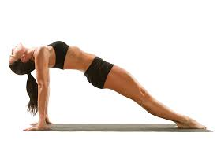
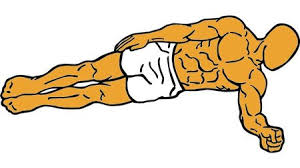

Técnica · 14 de junio de 2021
Abdominales
Abdominales
Historia de los Ejercicios Abdominales
El interés por los ejercicios abdominales tiene una evolución fascinante. En los años 50, los entrenamientos estaban reservados principalmente para atletas profesionales, cuyo rendimiento deportivo exigía un acondicionamiento físico riguroso. Con la llegada de los 60 y 70, los gimnasios comenzaron a abrir sus puertas a personas interesadas en mejorar su apariencia física, marcando el inicio de una mayor conciencia sobre el fitness.
En los 80 y 90, la popularidad de los gimnasios se disparó, y con ello, nació la era del fitness moderna. Los ejercicios abdominales se convirtieron en una parte esencial de las rutinas de entrenamiento, tanto para tonificar el cuerpo como para mejorar la salud general. Desde entonces, los abdominales han sido un pilar en el mundo del ejercicio, adaptándose a diferentes niveles y objetivos.
¿Qué son los músculos abdominales?
Los músculos abdominales, ubicados en la región del abdomen, cumplen tres funciones clave:
Soporte del tronco superior: Mantienen la estabilidad y alineación del cuerpo.
Movilidad: Facilitan movimientos como la flexión, rotación y torsión del torso.
Protección de órganos internos: Actúan como una barrera natural para mantener los órganos en su lugar dentro de la cavidad abdominal.
Estos músculos incluyen el recto abdominal, los oblicuos (externos e internos) y el transverso abdominal, cada uno con un rol específico en la funcionalidad y estética del core.
6 razones para incorporar ejercicios abdominales a tu rutina
Los ejercicios abdominales ofrecen múltiples beneficios que van más allá de la estética. Aquí te presentamos seis razones para incluirlos en tu entrenamiento:
Mejoran la postura corporal: Un core fuerte estabiliza la columna, reduciendo la tendencia a encorvarse.
Combaten la flacidez: Tonifican los músculos abdominales, dando un aspecto más firme.
Protegen los órganos internos: Refuerzan la pared abdominal, manteniendo los órganos en su lugar.
Facilitan la respiración: Un abdomen fuerte mejora la capacidad del diafragma para funcionar correctamente.
Previenen dolores de espalda y lumbares: Al fortalecer el core, se reduce la presión sobre la columna vertebral.
Reducen la hinchazón abdominal: Mejoran la digestión y la circulación, ayudando a desinflamar el abdomen.
Tipos de ejercicios abdominales
Existen diversos ejercicios para trabajar los músculos abdominales, cada uno enfocado en diferentes áreas del core. Se dividen en tres categorías principales:
Abdominales convencionales:
Ejercicios dinámicos como los crunches, sit-ups o elevaciones de piernas, que trabajan principalmente el recto abdominal.
Ideales para principiantes y para desarrollar fuerza en el abdomen.
Abdominales hipopresivos:
Enfocados en la respiración y la contracción del transverso abdominal.
Reducen la presión intraabdominal, ideales para postparto o para mejorar la postura.
Abdominales isométricos:
Ejercicios estáticos como la plancha o el puente lateral, que fortalecen el core sin movimiento.
Mejoran la resistencia y estabilidad del cuerpo.
Consejos para realizar ejercicios abdominales correctamente
Calidad antes que cantidad: Realiza los movimientos con control para evitar lesiones.
Activa el core: Mantén los abdominales contraídos durante el ejercicio para maximizar los resultados.
Combina tipos de ejercicios: Incluye variedad para trabajar todos los músculos del abdomen.
Respira correctamente: Exhala al contraer los músculos e inhala al relajarlos.
Progresión gradual: Si eres principiante, empieza con ejercicios sencillos (como crunches) y aumenta la intensidad con el tiempo.
Consulta a un profesional: Si tienes dudas sobre la técnica o condiciones médicas, busca orientación de un entrenador o fisioterapeuta.
Ejemplo de rutina básica de abdominales
Crunches convencionales: 3 series de 15 repeticiones.
Plancha frontal: 3 series de 20-30 segundos.
Bicicleta (para oblicuos): 3 series de 12 repeticiones por lado.
Elevaciones de piernas: 3 series de 10 repeticiones.
Descanso: 30 segundos entre ejercicios.
Realiza esta rutina 2-3 veces por semana, combinándola con ejercicios cardiovasculares o de fuerza para obtener mejores resultados.
Conclusión
Los ejercicios abdominales son una herramienta poderosa para fortalecer el core, mejorar la postura y prevenir lesiones. Ya sea que busques tonificar tu abdomen, mejorar tu salud o simplemente mantenerte activo, incluir abdominales en tu rutina es una excelente decisión. ¡Empieza hoy y descubre los beneficios de un core fuerte y saludable!


